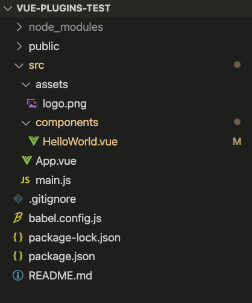

官网描述
插件
插件通常用来为 Vue 添加全局功能。插件的功能范围没有严格的限制——一般有下面几种：
- 添加全局方法或者property。 如vue-custom
- 添加全局资源：指令/过滤器/过渡等。如vue-touch
- 通过全局混入来添加一些组件选项。如vue-router
- 添加Vue实例方法，通过把他们添加到Vue.prototype上实现
- 一个库，提供自己的API，同时提供上面提到的一个或多个功能。如vue-router
使用插件
通过全局方法Vue.use()使用插件。它需要在你调用new Vue()启动应用之前完成：
2
3
4
5
Vue.use(MyPlugin);
new Vue({
// ...组件选项
})也可以传入一个可选的选项对象：
Vue.use 会自动阻止多次注册相同插件，届时即使多次调用也只会注册一次该插件。
Vue.js 官方提供的一些插件 (例如 vue-router) 在检测到 Vue 是可访问的全局变量时会自动调用 Vue.use()。然而在像 CommonJS 这样的模块环境中，你应该始终显式地调用 Vue.use()：
2
3
4
5
>var Vue = require('vue')
>var VueRouter = require('vue-router')
>// 不要忘了调用此方法
>Vue.use(VueRouter)
开发插件
Vue.js的插件应该暴露一个install方法。这个方法的第一个参数时Vue构造器，第二个参数是一个可选的选项对象：
2
3
4
5
6
7
8
9
10
11
12
13
14
15
16
17
18
19
20
21
22
23
// 1. 添加全局方法或property
Vue.myGlobalMethod = function () {
// 逻辑
}
// 2. 添加全局资源
Vue.directive('', {
bind(el, binding, vnode, oldVnode) {
// 逻辑
}
})
// 3. 注入组件选项
Vue.mixin({
created: function() {
// 逻辑
}
})
// 4. 添加实例方法
Vue.prototype.$myMethod = function (methodOptions) {
// 逻辑
}
>}
一图概括官网描述
本质上Vue插件就是提供了一个可以增加Vue本身的全局方法、原型、混入、指令的API。
以官网为例 实现一个获取当前时间的插件
插件目标
- vue全局指令 使用vue指令v-now即可获取当前时间并直接渲染在指令挂载的dom中
- vue全局方法 getNowTime可获取当前时间
- 利用vue-cli新建一个项目利用vue-cli创建完成后目录如下
1
2
3
4
5
6
7
8// Vue CLI 的包名称由 vue-cli 改成了 @vue/cli。 如果你已经全局安装了旧版本的 vue-cli (1.x 或 2.x)，你需要先通过 npm uninstall vue-cli -g 或 yarn global remove vue-cli 卸载它。
// Vue CLI v3
// 如版本低请先升级 npm update -g @vue/cli
// mac无权限报错记得sudo 用管理员权限安装
$ vue create vue-plugins-test
$ cd vue-plugins-test
$ npm run serve
// 启动后默认8080端口即可访问
 - 初始化插件相关目录
1
2
3
4$ cd src
$ mkdir plugins
$ cd plugins
$ touch vue-time.js1
2
3
4
5
6
7
8
9
10
11
12
13
14
15
16
17
18
19
20
21
22
23
24
25
26//vue-time.js
VueTime.install = function (Vue) {
// getNowTime方法
Vue.prototype.$getNowTime = function() {
}
// v-now指令
Vue.directive('v-now', {
bind(el, binding, vnode, oldVnode) {
}
})
}
//main.js
import Vue from 'vue'
import App from './App.vue'
import VueTime from './plugins/vue-time';
Vue.config.productionTip = false
Vue.use(VueTime);
new Vue({
render: h => h(App),
}).$mount('#app') - 完善方法好了，这样一个简单的显示当前时间的插件就完成了，以此类推，我们还可以完成复杂一些的插件。
1
2
3
4
5
6
7
8
9
10
11
12
13
14
15
16
17
18
19
20
21
22
23
24
25
26
27
28
29
30
31
32
33
34
35
36// vue-time.js
import Vue from 'vue';
class VueTime {
constructor() {
const initial = new Date();
Vue.util.defineReactive(this, 'now', initial);
// 时间每1s更新一次
setInterval(() => {
this.now = new Date();
}, 1000);
}
}
VueTime.install = function (Vue) {
const vueTime = new VueTime();
Vue.prototype.$getNowTime = function() {
return vueTime.now.toLocaleString();
}
Vue.directive('now', {
// , binding, vnode, oldVnode
bind(el) {
el.innerText = vueTime.now.toLocaleString();
}
})
}
export default VueTime;
// HelloWorld.vue
<template>
<div class="hello">
<div v-now></div>
<div>{{ this.$getNowTime() }}</div>
</div>
</template>Vue插件原理探秘
接下来我们可以看一下源码 Vue.use的API究竟时如何工作的,这样也有助于我们更好的理解Vue plugins1
2
3
4
5// vue/src/core/index.js :6
// 在这个文件中导出了Vue并且初始化了全局API
import { initGlobalAPI } from './global-api/index'
initGlobalAPI(Vue)1
2
3
4
5
6
7
8
9// 这个方法找到定义它的地方
// vue/src/core/global-api/index.js
import { initUse } from './use'
export function initGlobalAPI(Vue: GlobalAPI) {
...
initUse(Vue);
...
}1
2
3
4
5
6
7
8
9
10
11
12
13
14
15
16
17
18
19
20
21
22
23
24// 具体来看下这个方法是怎么写的
// vue/src/core/global-api/use.js
import { toArray } from '../util/index'
export function initUse (Vue: GlobalAPI) {
Vue.use = function (plugin: Function | Object) {
const installedPlugins = (this._installedPlugins || (this._installedPlugins = []))
if (installedPlugins.indexOf(plugin) > -1) {
return this
}
// additional parameters
const args = toArray(arguments, 1)
args.unshift(this)
if (typeof plugin.install === 'function') {
plugin.install.apply(plugin, args)
} else if (typeof plugin === 'function') {
plugin.apply(null, args)
}
installedPlugins.push(plugin)
return this
}
}
// 看源码可知Vue只是调用了install方法，并且把相关的入参传递进去，如果是一个function则直接调用, 之前会有一个判空的操作，确保插件只安装过一次。总结
Vue的插件原理或者实践还是比较简单的，源码中只是简单调用了install方法在前面加了一个插件是否已经安装过判断而已，并不复杂，在实际使用中，如果有一些通用的方法可以直接写vue插件进行封装，在全局做切面编程。
参考资料
- [1]官网Vue.js插件
- [2]Vue.js 2.6源码